- General visualizations
- Community ecology: analyses and viz
- Networks/graphs: analyses and viz
Communities, networks, & visualizations in R
Scott Chamberlain
The plan
Lets have some fun first - visualizations
install.packages("ggplot2")
library(ggplot2)
ggplot(data=iris, aes(Sepal.Length, Sepal.Width, colour=Species)) +
geom_point() +
scale_color_manual(values = c("#FF0000", "#0000FF", "#00FF00"))
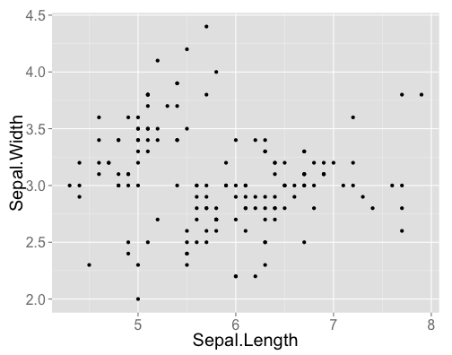
Terminology
- ggplot - The main function where you specify the dataset and variables to plot
- geom - geometric objects
geom_point(),geom_bar(),geom_density(),geom_line(),geom_area()
- aes - aesthetics
- shape, alpha (transparency), color, fill, linetype
- scale - Define how your data will be plotted
- continuous, discrete, log
Building blocks, mix and match
ggplot(data=iris, aes(Sepal.Length, Sepal.Width, colour=Species)) +
geom_point()
OR, just do
p <- ggplot(data=iris, aes(Sepal.Length, Sepal.Width, colour=Species))
p + geom_point()
Color by species
ggplot(data=iris, aes(Sepal.Length, Sepal.Width, colour=Species)) +
geom_point()
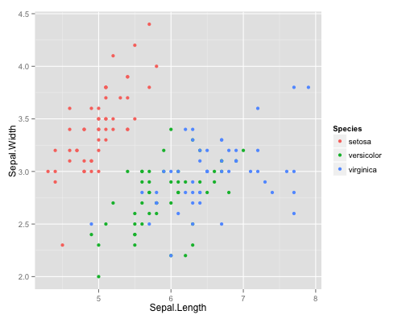
Adjust the size (and color) of points
ggplot(data=iris, aes(Sepal.Length, Sepal.Width, colour=Species)) +
geom_point(size = 6)
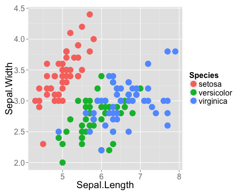
ggplot(data=iris, aes(Sepal.Length, Sepal.Width, color=Species, size=Species)) +
geom_point()
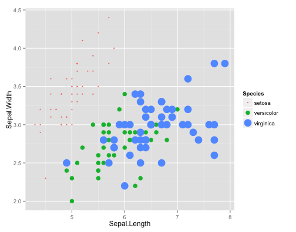
Facet by species
ggplot(data=iris, aes(Sepal.Length, Sepal.Width)) +
geom_point() +
facet_wrap(~ Species)
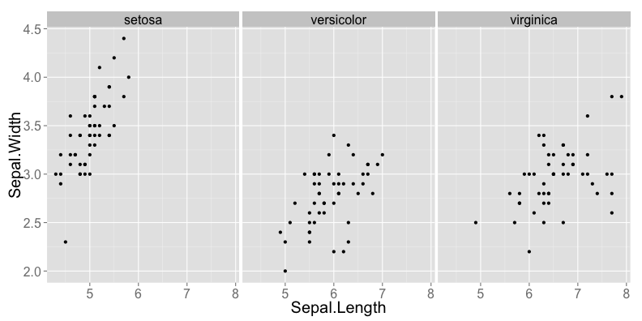
Combine geoms
Combine geom_boxplot and geom_point
ggplot(data=iris, aes(Species, Petal.Width)) +
geom_boxplot() +
geom_point()
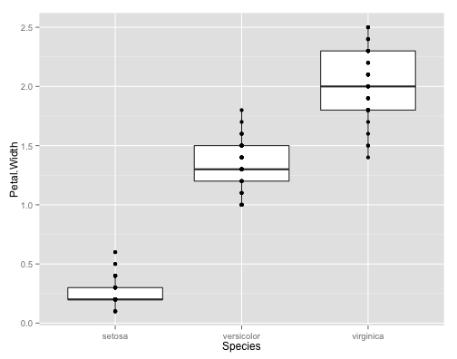
Order matters!
ggplot(data=iris, aes(Species, Petal.Width)) +
geom_point() +
geom_boxplot()
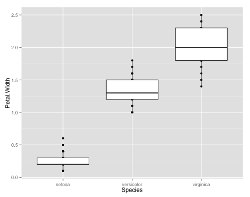
Make this plot
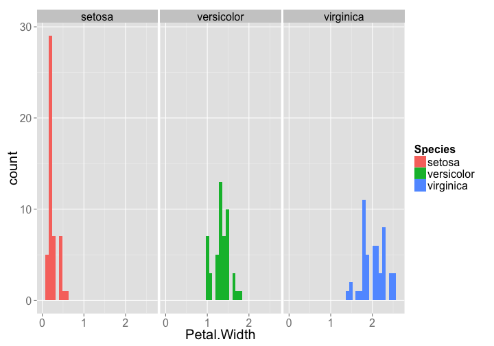
Saving plots using ggplot2
If the plot is on your screen
ggsave("~/path/to/figure/filename.png")
If your plot is assigned to an object
ggsave(plot1, file = "~/path/to/figure/filename.png")
Specify a size
ggsave(file = "/path/to/figure/filename.png", width = 6, height = 4)
Or any format (pdf, png, eps, svg, jpg)
ggsave(file = "/path/to/figure/filename.eps")
ggsave(file = "/path/to/figure/filename.jpg")
ggsave(file = "/path/to/figure/filename.pdf")
Community structure
- Diversity indices
- Rarefaction - comparing diverity in different samples
- Ordination
Diversity indices
Shannon-Weaver
library(vegan)
data(BCI)
bci_subset <- BCI[1:3, ]
head(bci_subset)[, 10:11]
Allophylus.psilospermus Alseis.blackiana
1 0 25
2 0 26
3 0 18
(H <- diversity(bci_subset))
1 2 3
4.018 3.848 3.814
Simpson
diversity(bci_subset, index = "simpson")
1 2 3 4
0.9746 0.9683 0.9646 0.9716
Evenness
H <- diversity(bci_subset)
H/log(specnumber(bci_subset))
1 2 3
0.8866 0.8686 0.8476
Rarefaction
nosp <- specnumber(BCI)
nosp_rare <- rarefy(BCI, raremax)
df <- data.frame(nosp, nosp_rare)
head(df)
nosp nosp_rare
1 93 84.34
2 84 76.53
3 90 79.12
4 94 82.47
5 101 86.91
6 85 78.51
Make this plot
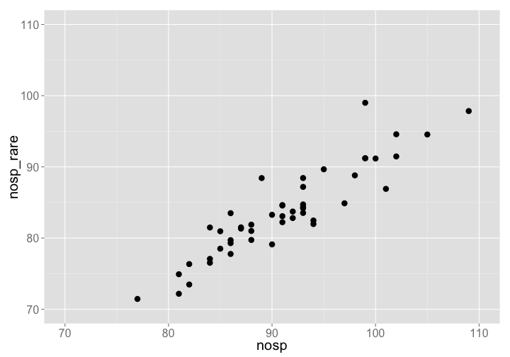
Rarefaction curves
raremax <- min(rowSums(BCI))
rarecurve(BCI, step = 20, sample = raremax, col = "blue", cex = 0.6)

data(BCI)
sp1 <- specaccum(BCI)
sp2 <- specaccum(BCI, "random")
sp2
Species Accumulation Curve
Accumulation method: random, with 100 permutations
Call: specaccum(comm = BCI, method = "random")
Sites 1.000 2.000 3.000 4.000 5.000 6.000 7.000 8.000
Richness 90.540 122.150 139.720 152.000 160.940 167.160 172.030 176.130
sd 7.328 7.606 6.914 5.841 5.373 5.095 4.929 4.915
Sites 9.000 10.000 11.000 12.000 13.000 14.000 15.000 16.000
Richness 179.690 182.600 185.280 187.640 190.080 192.230 194.360 196.150
sd 5.065 5.121 4.601 4.448 4.631 4.679 4.375 4.326
Sites 17.000 18.000 19.000 20.00 21.000 22.000 23.00 24.000
Richness 197.600 199.210 200.830 202.24 203.420 204.620 205.76 207.060
sd 4.365 4.441 4.468 4.36 4.305 4.104 3.98 3.858
Sites 25.000 26.000 27.000 28.000 29.000 30.000 31.000 32.000
Richness 208.460 209.450 210.330 211.250 212.250 213.110 214.010 214.700
sd 3.661 3.591 3.408 3.331 3.118 2.874 2.862 2.862
Sites 33.00 34.000 35.000 36.000 37.000 38.000 39.000 40.000
Richness 215.48 216.140 216.850 217.500 218.080 218.790 219.420 220.090
sd 2.83 2.704 2.516 2.572 2.537 2.467 2.483 2.417
Sites 41.000 42.000 43.000 44.000 45.000 46.000 47.000 48.000
Richness 220.600 221.120 221.570 222.030 222.600 223.180 223.640 223.960
sd 2.383 2.231 2.006 1.872 1.764 1.493 1.275 1.127
Sites 49.00 50
Richness 224.55 225
sd 0.73 0
summary(sp2)
1 sites 2 sites 3 sites 4 sites 5 sites
Min. : 77.0 Min. :103 Min. :124 Min. :139 Min. :147
1st Qu.: 85.0 1st Qu.:118 1st Qu.:136 1st Qu.:148 1st Qu.:157
Median : 90.0 Median :122 Median :140 Median :152 Median :161
Mean : 90.5 Mean :122 Mean :140 Mean :152 Mean :161
3rd Qu.: 94.2 3rd Qu.:127 3rd Qu.:144 3rd Qu.:156 3rd Qu.:164
Max. :109.0 Max. :139 Max. :154 Max. :166 Max. :173
6 sites 7 sites 8 sites 9 sites 10 sites
Min. :154 Min. :158 Min. :163 Min. :167 Min. :173
1st Qu.:164 1st Qu.:169 1st Qu.:173 1st Qu.:175 1st Qu.:179
Median :168 Median :173 Median :176 Median :180 Median :183
Mean :167 Mean :172 Mean :176 Mean :180 Mean :183
3rd Qu.:171 3rd Qu.:175 3rd Qu.:180 3rd Qu.:184 3rd Qu.:186
Max. :181 Max. :185 Max. :190 Max. :193 Max. :196
11 sites 12 sites 13 sites 14 sites 15 sites
Min. :177 Min. :178 Min. :179 Min. :181 Min. :182
1st Qu.:182 1st Qu.:185 1st Qu.:187 1st Qu.:189 1st Qu.:193
Median :185 Median :187 Median :190 Median :192 Median :194
Mean :185 Mean :188 Mean :190 Mean :192 Mean :194
3rd Qu.:188 3rd Qu.:190 3rd Qu.:193 3rd Qu.:195 3rd Qu.:197
Max. :197 Max. :199 Max. :200 Max. :202 Max. :204
16 sites 17 sites 18 sites 19 sites 20 sites
Min. :185 Min. :187 Min. :188 Min. :190 Min. :191
1st Qu.:194 1st Qu.:195 1st Qu.:197 1st Qu.:198 1st Qu.:199
Median :196 Median :198 Median :199 Median :201 Median :202
Mean :196 Mean :198 Mean :199 Mean :201 Mean :202
3rd Qu.:199 3rd Qu.:201 3rd Qu.:202 3rd Qu.:204 3rd Qu.:205
Max. :208 Max. :209 Max. :209 Max. :213 Max. :214
21 sites 22 sites 23 sites 24 sites 25 sites
Min. :192 Min. :195 Min. :196 Min. :198 Min. :200
1st Qu.:201 1st Qu.:202 1st Qu.:203 1st Qu.:204 1st Qu.:206
Median :203 Median :205 Median :206 Median :207 Median :208
Mean :203 Mean :205 Mean :206 Mean :207 Mean :208
3rd Qu.:207 3rd Qu.:207 3rd Qu.:208 3rd Qu.:210 3rd Qu.:211
Max. :215 Max. :215 Max. :216 Max. :217 Max. :218
26 sites 27 sites 28 sites 29 sites 30 sites
Min. :201 Min. :203 Min. :204 Min. :206 Min. :206
1st Qu.:207 1st Qu.:208 1st Qu.:209 1st Qu.:210 1st Qu.:211
Median :209 Median :211 Median :211 Median :212 Median :213
Mean :209 Mean :210 Mean :211 Mean :212 Mean :213
3rd Qu.:212 3rd Qu.:212 3rd Qu.:213 3rd Qu.:214 3rd Qu.:215
Max. :219 Max. :219 Max. :220 Max. :221 Max. :221
31 sites 32 sites 33 sites 34 sites 35 sites
Min. :207 Min. :208 Min. :210 Min. :210 Min. :210
1st Qu.:212 1st Qu.:213 1st Qu.:214 1st Qu.:214 1st Qu.:215
Median :214 Median :215 Median :216 Median :216 Median :217
Mean :214 Mean :215 Mean :215 Mean :216 Mean :217
3rd Qu.:216 3rd Qu.:217 3rd Qu.:217 3rd Qu.:218 3rd Qu.:218
Max. :221 Max. :223 Max. :223 Max. :223 Max. :223
36 sites 37 sites 38 sites 39 sites 40 sites
Min. :211 Min. :212 Min. :213 Min. :213 Min. :213
1st Qu.:216 1st Qu.:217 1st Qu.:218 1st Qu.:218 1st Qu.:218
Median :218 Median :218 Median :219 Median :220 Median :221
Mean :218 Mean :218 Mean :219 Mean :219 Mean :220
3rd Qu.:219 3rd Qu.:220 3rd Qu.:220 3rd Qu.:221 3rd Qu.:222
Max. :223 Max. :224 Max. :224 Max. :224 Max. :224
41 sites 42 sites 43 sites 44 sites 45 sites
Min. :214 Min. :214 Min. :215 Min. :215 Min. :216
1st Qu.:219 1st Qu.:220 1st Qu.:221 1st Qu.:221 1st Qu.:222
Median :221 Median :222 Median :222 Median :222 Median :223
Mean :221 Mean :221 Mean :222 Mean :222 Mean :223
3rd Qu.:222 3rd Qu.:223 3rd Qu.:223 3rd Qu.:223 3rd Qu.:224
Max. :225 Max. :225 Max. :225 Max. :225 Max. :225
46 sites 47 sites 48 sites 49 sites 50 sites
Min. :218 Min. :221 Min. :221 Min. :222 Min. :225
1st Qu.:222 1st Qu.:223 1st Qu.:223 1st Qu.:224 1st Qu.:225
Median :223 Median :224 Median :224 Median :225 Median :225
Mean :223 Mean :224 Mean :224 Mean :225 Mean :225
3rd Qu.:224 3rd Qu.:225 3rd Qu.:225 3rd Qu.:225 3rd Qu.:225
Max. :225 Max. :225 Max. :225 Max. :225 Max. :225
plot(sp1, ci.type = "poly", col = "blue", lwd = 2, ci.lty = 0, ci.col = "lightblue")
boxplot(sp2, col = "yellow", add = TRUE, pch = "+")
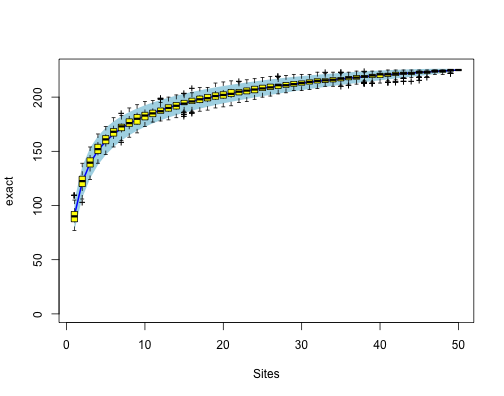
Ordination
data(dune)
ord <- metaMDS(dune)
Run 0 stress 0.1193
Run 1 stress 0.1193
... procrustes: rmse 0.0001945 max resid 0.000581
ord_axes <- data.frame(scores(ord))
ord_spp <- data.frame(scores(ord, display = "species"))
ggplot(ord_axes, aes(NMDS1, NMDS2)) + geom_point() + geom_point(data = ord_spp,
aes(NMDS1, NMDS2), colour = "red")
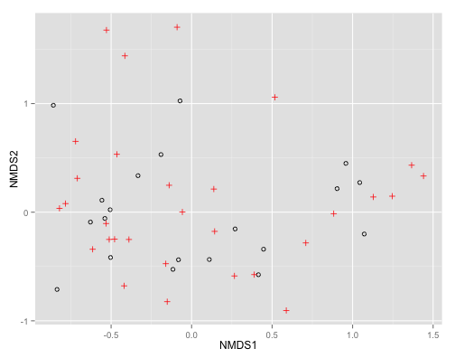
ord <- metaMDS(dune)
Run 0 stress 0.1193
Run 1 stress 0.1809
Run 2 stress 0.1183
... New best solution
... procrustes: rmse 0.02027 max resid 0.06498
Run 3 stress 0.2035
Run 4 stress 0.1193
Run 5 stress 0.1193
Run 6 stress 0.1183
... New best solution
... procrustes: rmse 4.182e-05 max resid 0.0001343
Networks
- ad
- ad
- ad